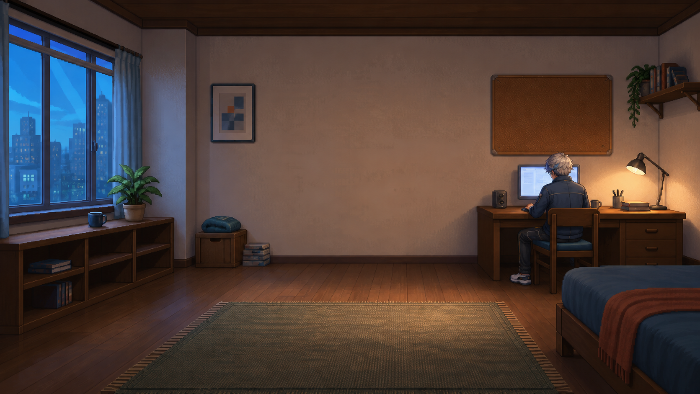

答分享此刻的想法...
▣ 提问题▤ 写回答▰ 写文章▸ 发视频

明天要自己去医院，但不知道先去哪、要带什么，也有点害怕弄错流程。希望有经历过的人能告诉我一下。
生活经验研究所：先准备好身份证、医保凭证和手机，提前确认科室与院区。到院后依次完成取号、签到、候诊……
山风：把重要证件放在固定位置，出门前只检查三件东西：手机、钥匙和证件。慢慢就不会那么慌了。
谢谢你之前的回答，我已经顺利办完手续了。
你收到了一条新的求助邀请。
把复杂的问题说清楚，也把慌张的人接住。
明天要自己去医院，但不知道先去哪、要带什么，也有点害怕弄错流程。希望有经历过的人能告诉我一下。
评论
先确认院区和科室，带上身份证与医保凭证，手机保持有电。
刚刚 · 回复 · 喜欢如果还是不确定，可以先拨打医院导诊台电话问一下。
1 分钟前 · 回复 · 喜欢